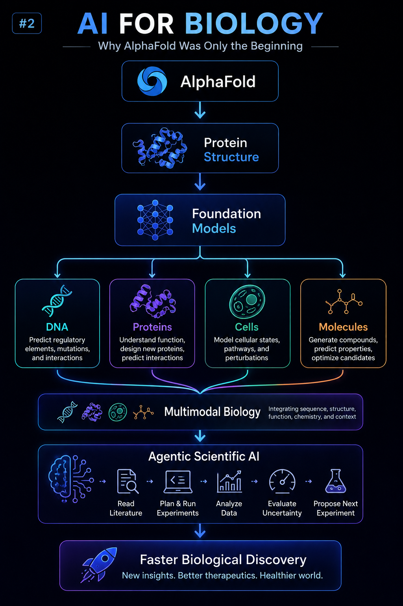

AI for Biology #2:
Why AlphaFold Was Only the Beginning
How foundation models are moving from predicting individual biological properties towards understanding complex biological systems.
July 2026 · Foundation Models · Protein AI · Computational Biology

The Wrong Question
When AlphaFold was released, one of the most common questions was:
"Has AI solved protein folding?"
I think this was the wrong question.
AlphaFold was not the end of a problem. It was the beginning of a new way of thinking about biology.
AlphaFold as a Proof of Concept
The importance of AlphaFold was not only its ability to predict protein structures with remarkable accuracy.
The deeper insight was that biological systems contain patterns that can be learned from data.
Evolution has generated an enormous amount of information encoded in biological sequences. Machine learning models can extract representations from this information and use them to understand properties that were previously difficult to predict.
AlphaFold demonstrated that foundation models could capture meaningful biological knowledge.
Beyond Protein Folding
The same idea is now expanding into many areas of biology:
- 🧬 DNA foundation models learning patterns from genomic sequences
- 🧪 Protein language models learning representations from amino acid sequences
- 🧫 Cell foundation models integrating complex cellular information
- 💊 Drug discovery models connecting biological systems with therapeutic design
- 🧠 Multimodal biomedical AI combining different sources of biological knowledge
The goal is moving from predicting isolated properties towards building richer representations of biological systems.
The Next Challenge: Understanding Biology as a System
Predicting a protein structure is an extraordinary achievement. However, biology is not defined by structures alone.
A complete understanding requires integrating multiple layers of information:
- Sequence
- Structure
- Function
- Experimental measurements
- Scientific literature
- Biological context
The next generation of biological AI systems will need to combine these different sources into coherent models capable of reasoning about complex biological processes.
From Foundation Models to Scientific Agents
Foundation models are powerful, but they do not operate in isolation.
The future may come from combining these models with agentic systems capable of supporting researchers throughout the scientific workflow.
- 📚 Read and summarize scientific literature
- 🧪 Design computational experiments
- 📊 Analyze biological datasets
- 📈 Evaluate uncertainty and confidence
- 🔄 Suggest the next experiment or analysis step
Instead of replacing scientists, these systems could become scientific collaborators that extend human reasoning and exploration capabilities.
The Future of Biological AI
AlphaFold showed us something fundamental:
Biology contains learnable patterns.
The next decade will be about building AI systems that can reason across the entire biological discovery process.
From molecular sequences to experimental design, the biggest advances may come from models that connect different levels of biological knowledge.
Open Questions
- Can foundation models develop general representations of biology?
- How can AI systems combine experimental data with learned knowledge?
- What role will autonomous scientific agents play in discovery?
- Which biological problems will benefit most from these approaches?
Related Work
Continue reading:
AI for Biology #3: Can AI Design Better Proteins?